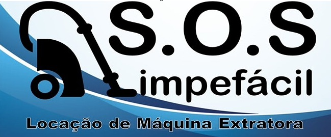

Alugue e limpe você mesmo! Deixe seus estofados limpos e livres de ácaros e bactérias de uma forma rádida ,fácil e econômica.
Em quase toda casa é considerado um dos itens mais importantes do lar, o sofá pode durar meses, anos ou até décadas, dependendo da qualidade do material e, principalmente, da sua manutenção. Um dos fatores mais impactantes nesta durabilidade está relacionado a limpeza e higiene; muitas vezes essa limpeza é feita com panos molhados e água com sabão, o que pode acabar causando umidade e um acúmulo ainda maior de ácaros, bactérias e fungos. Mais do que estética, a limpeza e a higienização do estofado são importantes para evitar problemas de saúde. É hora de procurar por uma empresa especializada no serviço quando a sujeira começa a incomodar Atuamos no mercado a mais de 3 anos proporcionando aos nossos clientes conforto, praticidade, segurança, entre outros, com o menor custo-benefício.